United Kingdom · Tier VIII
All nations and tiers · EU v20410 → RU v14600ru · 3 November 2026
AT 15 · Tier VIII
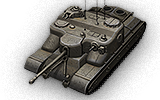
Penetration (mm)
EU  AP 220 /
AP 220 /  APCR 252 /
APCR 252 /  HE 47 → RU
HE 47 → RU  AP 230 /
AP 230 /  APCR 274 /
APCR 274 /  HE 47
HE 47
Firepower
Module damage EU 127  RU 135
RU 135
Gun handling
Dispersion (m/100 m) EU 0.29  RU 0.30
RU 0.30
Dispersion · damaged EU 0.58 RU 0.59
Dispersion · moving EU 0.18 RU 0.28
Dispersion · tank traverse EU 0.18 RU 0.28
Mobility
Forward speed (km/h) EU 25 RU 20
Forward speed on hard terrain (km/h) EU 25 RU 20
Forward speed on medium terrain (km/h) EU 25 RU 20
Forward speed on soft terrain (km/h) EU 16.96 RU 16.19
Reverse speed (km/h) EU 12 RU 10
Engine power (hp) EU 720 RU 687.23
Power/weight (hp/t) EU 11.59 RU 11.06
Tank traverse (°/s) EU 29.20 RU 20.86
Tank traverse on hard terrain (°/s) EU 28.98 RU 24.86
Tank traverse on medium terrain (°/s) EU 25.12 RU 21.54
Tank traverse on soft terrain (°/s) EU 14.49 RU 12.43
Armor & health
Hull armor · front (mm) EU 228.60 RU 254
Health EU 1 500 RU 1 450
Caernarvon · Tier VIII
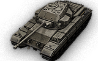
Firepower
Module damage EU 127 RU 135
Gun handling
Aim time (s) EU 2.01 RU 2.21
Dispersion · turret traverse EU 0.12 RU 0.14
Mobility
Forward speed on soft terrain (km/h) EU 24.13 RU 22.96
Engine power (hp) EU 900 RU 856.40
Power/weight (hp/t) EU 14.58 RU 13.87
Tank traverse (°/s) EU 31.29 RU 25.03
Tank traverse on hard terrain (°/s) EU 30.90 RU 28.41
Tank traverse on medium terrain (°/s) EU 26.15 RU 24.04
Tank traverse on soft terrain (°/s) EU 14.78 RU 13.59
Armor & health
Health EU 1 750 RU 1 600
Caernarvon Action X · Tier VIII
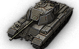
Firepower
DPM (HP/min) EU 2 439.56 RU 2 570.25
Rate of fire (rounds/min) EU 10.61 RU 11.18
Reload time (s) EU 5.66 RU 5.37
Gun handling
Aim time (s) EU 2.21 RU 1.82
Dispersion · moving EU 0.16 RU 0.12
Dispersion · tank traverse EU 0.16 RU 0.12
Dispersion · turret traverse EU 0.16 RU 0.10
Dispersion · firing EU 3.50 RU 2.50
Mobility
Reverse speed (km/h) EU 12 RU 15
Centurion Mk. 5/1 RAAC · Tier VIII
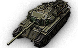
Firepower
DPM (HP/min) EU 2 056.20 RU 1 919.12
Rate of fire (rounds/min) EU 8.94 RU 8.34
Reload time (s) EU 6.71 RU 7.19
Centurion Mk. I · Tier VIII
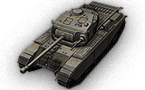
Penetration (mm)
EU  AP 226 /
AP 226 /  APCR 258 /
APCR 258 /  HE 42 → RU
HE 42 → RU  AP 226 /
AP 226 /  APCR 258 /
APCR 258 /  HE 84
HE 84
Firepower
DPM (HP/min) EU 2 248.97 RU 2 214.37
Module damage EU 113 RU 118
Rate of fire (rounds/min) EU 9.78 RU 9.63
Reload time (s) EU 6.14 RU 6.23
Gun handling
Aim time (s) EU 2.21 RU 1.82
Dispersion · moving EU 0.14 RU 0.12
Dispersion · tank traverse EU 0.14 RU 0.12
Dispersion · turret traverse EU 0.12 RU 0.10
Mobility
Forward speed on soft terrain (km/h) EU 37.91 RU 35.36
Engine power (hp) EU 850 RU 792.96
Power/weight (hp/t) EU 18.92 RU 17.65
Tank traverse on hard terrain (°/s) EU 37.75 RU 42.05
Tank traverse on medium terrain (°/s) EU 34.32 RU 38.22
Tank traverse on soft terrain (°/s) EU 19.87 RU 22.13
Armor & health
Health EU 1 600 RU 1 450
Charioteer · Tier VIII
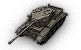
Gun handling
Aim time (s) EU 2.30 RU 2.35
Dispersion · damaged EU 0.67 RU 0.69
Dispersion · moving EU 0.25 RU 0.28
Dispersion · tank traverse EU 0.25 RU 0.28
Mobility
Forward speed on soft terrain (km/h) EU 48.90 RU 48
Engine power (hp) EU 700 RU 687.23
Power/weight (hp/t) EU 23.13 RU 22.70
Turret traverse (°/s) EU 18.77 RU 18.39
Tank traverse (°/s) EU 43.81 RU 37.55
Tank traverse on hard terrain (°/s) EU 44.14 RU 38.59
Tank traverse on medium terrain (°/s) EU 39.72 RU 34.73
Tank traverse on soft terrain (°/s) EU 22.07 RU 19.30
Armor & health
Health EU 1 200 RU 1 050
Chieftain/T95 · Tier VIII
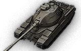
Penetration (mm)
EU  AP 202 /
AP 202 /  APCR 238 /
APCR 238 /  HE 45 → RU
HE 45 → RU  APCR 238 /
APCR 238 /  HEAT 270 /
HEAT 270 /  HE 45
HE 45
Damage (HP)
EU  AP 240 /
AP 240 /  APCR 240 /
APCR 240 /  HE 320 → RU
HE 320 → RU  APCR 240 /
APCR 240 /  HEAT 240 /
HEAT 240 /  HE 320
HE 320
Firepower
Shell velocity (m/s) EU 1 143 RU 1 570
Normalization EU 5 RU 2
Mobility
Forward speed (km/h) EU 42 RU 45
Forward speed on hard terrain (km/h) EU 42 RU 45
Forward speed on medium terrain (km/h) EU 42 RU 45
Reverse speed (km/h) EU 15 RU 18
Miscellaneous
Shell cost EU 350 RU 420
Crusher · Tier VIII
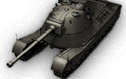
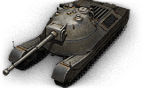
Penetration (mm)
EU  AP 215 /
AP 215 /  APCR 252 /
APCR 252 /  HE 57 → RU
HE 57 → RU  APCR 221 /
APCR 221 /  HEAT 250 /
HEAT 250 /  HE 57
HE 57
Damage (HP)
EU  AP 350 /
AP 350 /  APCR 350 /
APCR 350 /  HE 500 → RU
HE 500 → RU  APCR 380 /
APCR 380 /  HEAT 380 /
HEAT 380 /  HE 510
HE 510
Firepower
DPM (HP/min) EU 2 086 RU 1 917.77
Rate of fire (rounds/min) EU 5.96 RU 5.05
Reload time (s) EU 10.07 RU 11.89
Shell velocity (m/s) EU 850 RU 1 400
Normalization EU 5 RU 2
Ammo capacity EU 50 RU 54
Potential damage EU 17 500 RU 20 520
Gun handling
Aim time (s) EU 2.21 RU 2.59
Dispersion (m/100 m) EU 0.36 RU 0.35
Dispersion · damaged EU 0.73 RU 0.69
Dispersion · moving EU 0.16 RU 0.18
Dispersion · tank traverse EU 0.16 RU 0.18
Dispersion · turret traverse EU 0.10 RU 0.12
Depression (°) EU 10 RU 9
Mobility
Forward speed (km/h) EU 24 RU 25
Forward speed on hard terrain (km/h) EU 24 RU 25
Forward speed on medium terrain (km/h) EU 24 RU 25
Reverse speed (km/h) EU 12 RU 14
Weight (kg) EU 72 000 → RU 72 002
Turret traverse (°/s) EU 23.99 RU 29.20
Tank traverse (°/s) EU 25.03 RU 29.20
Tank traverse on hard terrain (°/s) EU 23.78 RU 27.74
Tank traverse on medium terrain (°/s) EU 20.12 RU 23.48
Tank traverse on soft terrain (°/s) EU 11.37 RU 13.27
Armor & health
Hull armor · side (mm) EU 80 RU 76
Hull armor · rear (mm) EU 80 RU 76
Turret armor · front (mm) EU 230 RU 245
Turret armor · side (mm) EU 130 RU 160
Turret armor · rear (mm) EU 80 RU 160
Health EU 1 400 RU 1 500
Miscellaneous
Stationary camo EU 3.82 RU 4.16
Stationary camo · after firing EU 0.80 RU 0.87
Moving camo EU 1.94 RU 2.05
Moving camo · after firing EU 0.41 RU 0.43
View range (m) EU 360 RU 380
Radio range (m) EU 782.25 RU 730.10
Shell cost EU 710 RU 1 050
FV1066 Senlac · Tier VIII
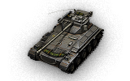
Firepower
DPM (HP/min) EU 2 048.07 RU 2 005.85
Rate of fire (rounds/min) EU 11.38 RU 11.14
Reload time (s) EU 5.27 RU 5.38
FV207 · Tier VIII
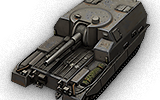
Penetration (mm)
EU  HE 38 /
HE 38 /  HE 48 /
HE 48 /  AP 254 → RU
AP 254 → RU  HE 38 /
HE 38 /  AP 254
AP 254
Damage (HP)
EU  HE 650 /
HE 650 /  HE 800 /
HE 800 /  AP 480 → RU
AP 480 → RU  HE 800 /
HE 800 /  AP 500
AP 500
Firepower
DPM (HP/min) EU 1 422.27 RU 1 788
Rate of fire (rounds/min) EU 2.19 RU 2.24
Reload time (s) EU 27.42 RU 26.85
Explosion radius EU 7.60 RU 6.30
Stun duration · maximum (s) EU 25 → RU —
Stun duration · minimum (s) EU 12.50 → RU —
Shell velocity (m/s) EU 480 RU 340
Max range (m) EU 1 404.88 RU 1 005.22
Potential damage EU 31 200 RU 38 400
Gun handling
Aim time (s) EU 3.84 RU 4.31
Dispersion · turret traverse EU 0.42 RU 0.44
Mobility
Tank traverse (°/s) EU 26.08 RU 20.86
Tank traverse on hard terrain (°/s) EU 26.16 RU 20.93
Tank traverse on medium terrain (°/s) EU 22.67 RU 18.14
Tank traverse on soft terrain (°/s) EU 13.60 RU 10.88
Armor & health
Health · track EU 220 RU 140
Health · ammo rack EU 210 RU 134
Track repair time (s) EU 11.70 RU 12.81
Miscellaneous
Moving camo EU 3.88 RU 3.82
Shell cost EU 1 220 RU 1 430
FV4202 · Tier VIII

Firepower
DPM (HP/min) EU 1 919.12 RU 2 086
Rate of fire (rounds/min) EU 8.34 RU 9.07
Reload time (s) EU 7.19 RU 6.62
Gun handling
Aim time (s) EU 2.21 RU 1.82
Dispersion · moving EU 0.14 RU 0.12
Dispersion · tank traverse EU 0.14 RU 0.12
Dispersion · turret traverse EU 0.16 RU 0.12
Mobility
Forward speed on soft terrain (km/h) EU 49.56 RU 50
Engine power (hp) EU 650 RU 800
Power/weight (hp/t) EU 15.63 RU 19.23
Turret traverse (°/s) EU 37.55 RU 50.06
Tank traverse (°/s) EU 41.72 RU 52.15
Tank traverse on hard terrain (°/s) EU 39.63 RU 49.54
Tank traverse on medium terrain (°/s) EU 33.97 RU 42.47
Tank traverse on soft terrain (°/s) EU 19.82 RU 24.77
FV4202 FL · Tier VIII
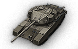
Firepower
DPM (HP/min) EU 1 919.12 RU 2 086
Rate of fire (rounds/min) EU 8.34 RU 9.07
Reload time (s) EU 7.19 RU 6.62
Gun handling
Aim time (s) EU 2.21 RU 1.82
Dispersion · moving EU 0.14 RU 0.12
Dispersion · tank traverse EU 0.14 RU 0.12
Dispersion · turret traverse EU 0.16 RU 0.12
Mobility
Forward speed on soft terrain (km/h) EU 49.56 RU 50
Engine power (hp) EU 650 RU 800
Power/weight (hp/t) EU 15.63 RU 19.23
Turret traverse (°/s) EU 37.55 RU 50.06
Tank traverse (°/s) EU 41.72 RU 52.15
Tank traverse on hard terrain (°/s) EU 39.63 RU 49.54
Tank traverse on medium terrain (°/s) EU 33.97 RU 42.47
Tank traverse on soft terrain (°/s) EU 19.82 RU 24.77
FV601 Saladin · Tier VIII
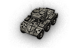
Damage (HP)
EU  AP 280 /
AP 280 /  APCR 280 /
APCR 280 /  HE 370 → RU
HE 370 → RU  AP 250 /
AP 250 /  APCR 250 /
APCR 250 /  HE 320
HE 320
Firepower
DPM (HP/min) EU 2 086 RU 1 915.31
Rate of fire (rounds/min) EU 7.45 RU 7.66
Reload time (s) EU 8.05 RU 7.83
Shell velocity (m/s) EU 1 100 RU 980
Potential damage EU 14 000 RU 12 500
Mobility
Forward speed (km/h) EU 65 RU 60
Forward speed on hard terrain (km/h) EU 65 RU 60
Forward speed on medium terrain (km/h) EU 65 RU 60
Forward speed on soft terrain (km/h) EU 47.80 RU 60
Terrain resist (hard) EU 0.96 RU 0.12
Terrain resist (med) EU 1.05 RU 0.12
Terrain resist (soft) EU 1.82 RU 0.12
Tank traverse (°/s) EU 31.29 RU 62.58
Tank traverse on hard terrain (°/s) EU 28.37 RU 56.74
Tank traverse on medium terrain (°/s) EU 25.79 RU 56.74
Tank traverse on soft terrain (°/s) EU 14.93 RU 56.74
Armor & health
Health EU 1 450 RU 1 200
GSOR 1008 · Tier VIII
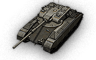
Firepower
DPM (HP/min) EU 1 562.73 RU 1 534.38
Rate of fire (rounds/min) EU 4.88 RU 4.79
Reload time (s) EU 43.14 RU 44.05
GSOR 1010 FB · Tier VIII
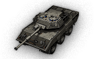
Firepower
DPM (HP/min) EU 1 846.62 RU 1 808.56
Rate of fire (rounds/min) EU 5.13 RU 5.02
Reload time (s) EU 11.70 RU 11.94
Mobility
Terrain resist (hard) EU 0.67 RU 0.12
Terrain resist (med) EU 0.77 RU 0.12
Terrain resist (soft) EU 1.34 RU 0.12
Tank traverse (°/s) EU 31.29 RU 62.58
Tank traverse on hard terrain (°/s) EU 29.73 RU 59.45
Tank traverse on medium terrain (°/s) EU 26.01 RU 59.45
Tank traverse on soft terrain (°/s) EU 14.86 RU 59.45
LHMTV · Tier VIII
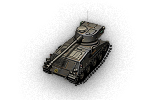
Firepower
DPM (HP/min) EU 1 439.34 RU 1 409.67
Module damage EU 115 RU 118
Rate of fire (rounds/min) EU 6.26 RU 6.13
Reload time (s) EU 9.59 RU 9.79
Ammo capacity EU 33 RU 25
Potential damage EU 7 590 RU 5 750
Mobility
Forward speed (km/h) EU 66 RU 63
Forward speed on hard terrain (km/h) EU 66 RU 63
Forward speed on medium terrain (km/h) EU 66 RU 63
Forward speed on soft terrain (km/h) EU 66 RU 63
Engine power (hp) EU 175 RU 160
Weight (kg) EU 4 617 → RU 4 801
Power/weight (hp/t) EU 37.90 RU 33.33
Tank traverse (°/s) EU 52.15 RU 43.81
Tank traverse on hard terrain (°/s) EU 55.64 RU 44.83
Tank traverse on medium terrain (°/s) EU 48.68 RU 39.23
Tank traverse on soft terrain (°/s) EU 27.82 RU 22.41
Armor & health
Track armor EU 10 RU 15
Health EU 1 250 RU 1 050
Nemesis · EU VIII → RU X
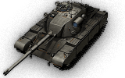
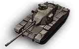
Penetration (mm)
EU  AP 225 /
AP 225 /  APCR 280 /
APCR 280 /  HE 90 → RU
HE 90 → RU  HE 230 /
HE 230 /  HEAT 330 /
HEAT 330 /  AP 240
AP 240
Damage (HP)
EU  AP 420 /
AP 420 /  APCR 420 /
APCR 420 /  HE 530 → RU
HE 530 → RU  HE 510 /
HE 510 /  HEAT 430 /
HEAT 430 /  AP 430
AP 430
General
Tier EU 8 → RU 10
Firepower
DPM (HP/min) EU 1 546.09 RU 2 799.63
Rate of fire (rounds/min) EU 3.68 RU 5.49
Reload time (s) EU 16.30 RU 10.93
Shell velocity (m/s) EU 1 000 RU 1 120
Normalization EU 5 RU 0
Ricochet angle EU 70 RU 90
Ammo capacity EU 50 RU 60
Potential damage EU 21 000 RU 30 600
Explosion radius EU — → RU 1.91
Gun handling
Aim time (s) EU 2.40 RU 2.01
Dispersion (m/100 m) EU 0.36 RU 0.33
Dispersion · damaged EU 0.73 RU 0.65
Dispersion · moving EU 0.21 RU 0.16
Dispersion · tank traverse EU 0.21 RU 0.16
Dispersion · turret traverse EU 0.15 RU 0.08
Dispersion · firing EU 3.50 RU 4
Depression (°) EU 10 RU 8
Mobility
Forward speed (km/h) EU 40 RU 45
Forward speed on hard terrain (km/h) EU 40 RU 45
Forward speed on medium terrain (km/h) EU 40 RU 45
Forward speed on soft terrain (km/h) EU 40 RU 45
Reverse speed (km/h) EU 16 RU 20
Engine power (hp) EU 650 RU 940
Power/weight (hp/t) EU 16.21 RU 23.44
Terrain resist (hard) EU 0.38 RU 0.96
Terrain resist (med) EU 0.48 RU 1.05
Terrain resist (soft) EU 0.96 RU 1.82
Turret traverse (°/s) EU 31.29 RU 45.89
Tank traverse (°/s) EU 36.50 RU 57.36
Tank traverse on hard terrain (°/s) EU 34.68 RU 54.50
Tank traverse on medium terrain (°/s) EU 27.74 RU 49.54
Tank traverse on soft terrain (°/s) EU 13.87 RU 28.68
Armor & health
Hull armor · front (mm) EU 70 RU 135
Hull armor · side (mm) EU 50.80 RU 80
Hull armor · rear (mm) EU 38.10 RU 60
Turret armor · front (mm) EU 254 RU 300
Turret armor · side (mm) EU 76.20 RU 60
Turret armor · rear (mm) EU 50.80 RU 60
Track armor EU 20 RU 25
Health EU 1 300 RU 1 950
Health · engine EU 247 RU 320
Health · track EU 200 RU 250
Health · ammo rack EU 220 RU 260
Health · fuel tank EU 175 RU 200
Track repair time (s) EU 10.03 RU 12.03
Miscellaneous
Stationary camo EU 10.72 RU 13.68
Stationary camo · after firing EU 2.24 RU 2.86
Moving camo EU 8.04 RU 10.26
Moving camo · after firing EU 1.68 RU 2.14
View range (m) EU 380 RU 410
Radio range (m) EU 782.25 RU 730.10
Fire chance (%) EU 15 RU 20
Shell cost EU 1 065 RU 1 560